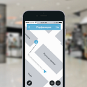

About Navigine Indoor Location Services¶
Navigine Indoor Location Services is a set of unified tools for indoor marketing, analysis, and tracking purposes. The tools’ application scope includes (and is not limited to) airports, shopping malls, universities, and so on.
The Navigine’s Indoor Location Services include:
| Navigine Indoor | Navigine Marketing | Navigine Analytics | Navigine Tracking |
|  | |||
Navigine Indoor allows to
implement navigation
inside any building with
up to 1 meter accuracy
|
Navigine Marketing is the
tool for quick
embedding indoor
push-notifications
into mobile apps
|
Navigine Analytics enables
to analyze objects motion
inside building in real
time
|
Navigine Tracking enables
tracking motion of staff
vehicles, and other assets
|
NAVIGINE INDOOR Accurate navigation
inside any building
|
Navigation platform Navigine enables mobile developers
to create a wide range of services on the basis of high
accurate indoor navigation. Mobile applications powered
by Navigine Indoor helps visitors to easily navigate
inside large buildings and building owners to monitor
and manage their employees motion. In order to guarantee
high accuracy navigation technology uses external
infrastructure – iBeacon/Wi-Fi as well as internal
smartphone sensors – accelerometers, gyroscopes,
barometer, compass and also leverage map features and
human motion model. Functions of Navigine Indoor are
quickly and easily integrated into any mobile application
using API/SDK Navigine. Proven Navigine approach allows
to roll out navigation service on 50000 sq. m. per one
day by one employee. You may evaluate service performance
by ordering our Developer Kit.
|
NAVIGINE MARKETING Indoor location
advertisement
in mobile apps
|
Marketing platform Navigine is the tool to create and
manage indoor push notifications in mobile applications
on the basis of iBeacon technology. Using this platform
mobile developers may significantly improve customer
experience and monetization of mobile apps as well as
advertisers may leverage additional marketing channel.
As for technology our marketing platform uses Bluetooth
Low Energy (Bluetooth 4.0) protocol. Requirements for
platform operations are availability of Bluetooth 4.0 on
mobile devices and installed Bluetooth beacons in zones
where push notifications are needed Functions of Navigine
Marketing are integrated into mobile applications using
API/SDK. In order to create and manage notifications
developers receive an access to special web interface.
|
NAVIGINE ANALYTICS Comprehensive indoor
location analytics
|
Allows building owners to analyze motion of visitors
and staff inside their buildings. Services on the basis
of Navigine Analytics helps to build motion heat maps and
optimize marketing channels.
|
NAVIGINE TRACKING Real time indoor
tracking services
|
Allows building owners to track the motion of staff,
vehicles and other assets on the building’s premises.
IT solutions using Navigine Tracking help to track
object’s indoor movements in real time and optimize
logistics business processes.
|